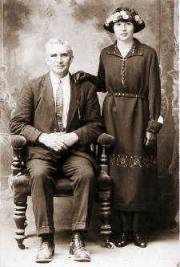
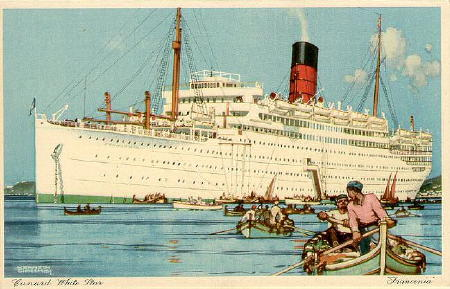

|
According to a Census Report of 1901(for Lackyle north) there was no record of a Michael Francis, so he must have emigrated to England some time before that. During an interview with Dan (Michael Francis' son) Aug. 8, 1991, he states: "father left home at age 14 (1890) to work in Newmarket-on-Fergus, Co.Clare, Ireland. Later, he moved to Limerick and finally on to Dublin where he joined the British army. He was stationed in England and it was there that he met and married his bride Barbara Nimmo". Vera Nugent (Daughter) said he served with the 13th Infantry "Huzzar". Michael Francis returned home with his family in approximately 1910. A 1911 Census Report (for Lackyle north) lists Dan as 1 year old. Additionally, the report states: 4 children born, 3 living. Margaret(5), John(3) and Dan(1). The fourth child was either Michael or Francis (both of whom died as infants) as Barbara wasn't born until 1920 and later died in 1921.
|  |
In 1923, Margaret "Peg" Furey (Butler), age 18, said goodbye to her father, Michael Francis Furey, and sailed on the RMS Franconia II
from Queenstown (Cobh), Cork, Munster, Ireland arriving at Ellis Island on July 2nd.
Click the ship's name for pictures and interesting facts about it.
 |
| |